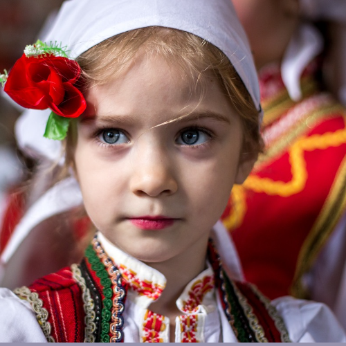

1 Marije, bela Marije
Marie, blanche Marie
(Petnaesta Rukovet - 15ème guirlande :00:00 - )

|
|
|
|
 1. Version Mokranjac |
 1. Version Pavle AksentijeviÄ (né en 1942) |
 1. Arrangement de Kornelije KovaÄ (1945-2005) |
 2 Version Jordan NikoliÄ (1933-2018) |
NOTE
|
Ðва лепа македонÑка мелодиÑа инÑпиÑиÑала Ñе, поÑед СÑевана ÐокÑаÑÑа, ÑÐ¾Ñ Ð´Ð²Ð¾ÑиÑÑ Ð¸Ð·ÑзеÑниÑ
мÑзиÑаÑа: Ðавла ÐкÑенÑиÑевиÑа и ÐоÑнелиÑа ÐоваÑа. Ðао ми Ñе ÑÑо jе Ð¾Ð²Ð°Ñ Ð´ÑÑги жÑÑвовао моди баÑеÑиÑа коÑе Ñине ÑÑжним оно ÑÑо гиÑаÑа Ñини ÑзвиÑеним... ÐаÑиÑа има ÑеÑÑÑÑ ÐºÐ¾Ñа ноÑи иÑÑо име и коÑа ÑакоÑе паÑи од ÑаздвоÑеноÑÑи од воÑеног: Ñо Ñе 2. мелодиÑа, блиÑка пÑвоÑ, коÑÑ Ð¸Ð·Ð²Ð¾Ð´Ð¸ ÐоÑдан ÐиколиÑ. |
Cette merveilleuse mélodie macédonienne a inspiré, outre Stevan Mokranjac, deux autres musiciens remarquables, Pavle AksentijeviÄ et Kornelije KovaÄ. Je regrette que ce dernier ait sacrifié à la mode des batteries qui enlaidissent ce que la guitare rend sublime... Cette Marija a une soeur qui porte le même nom et qui souffre, elle aussi d'être séparée de son bienaimé: c'est le 2ème mélodie, proche de la première, qu'interprête Jordan NikoliÄ. |